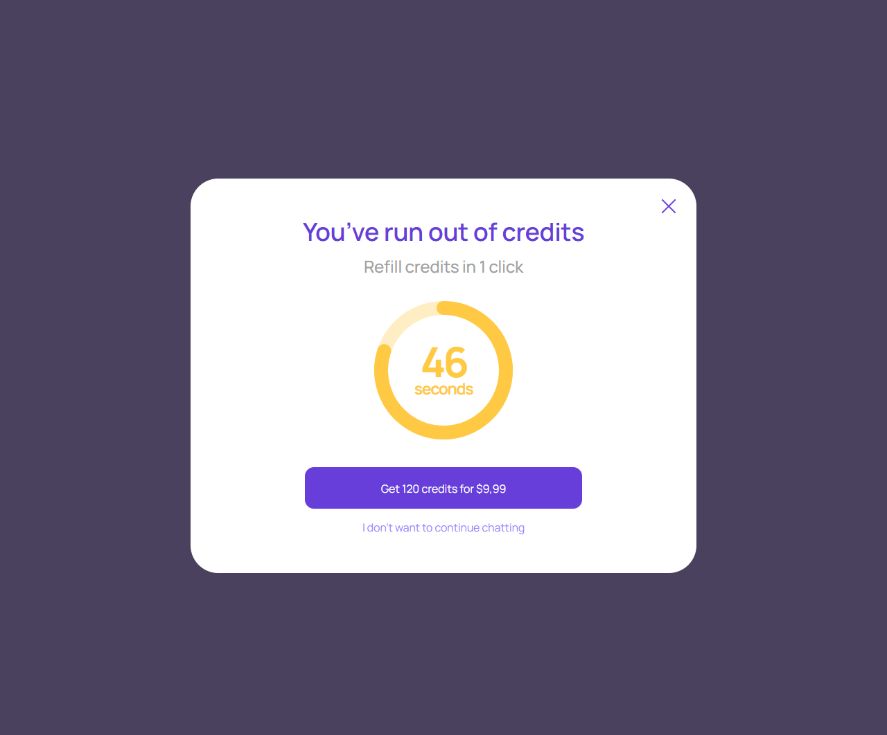
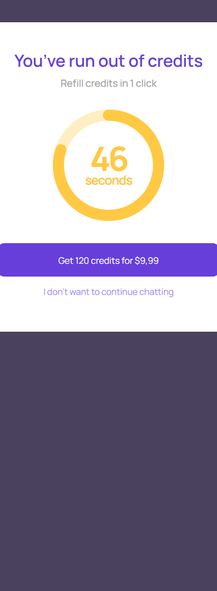

Разовое быстрое пополнение
account/one-click-top-up.html
Купить конкретный пакет одним явным подтверждением.
| Когда открывается | Пауза и разрешенный сохраненный способ оплаты |
|---|---|
| Данные | package snapshot; сохраненный способ; PSP capability; order. |
| Сценарий | Кнопка покупки → одна попытка платежа, при необходимости PSP challenge → результат. Отказ не завершает сессию тайно. |
| Переходы | Реквизиты оплаты · Ошибка карточного платежа · Активная консультация |
One-click не включает auto-refill и не обходит банковское подтверждение.
Общая и предметная логика. Снимки и подписи элементов — исходная редакция макета; поздние уточнения ТЗ имеют приоритет в своей области. Это не проверка текущего сайта.
Сопоставление с AskNebula
Существующие наблюдения 07–09.10.2026, без повторной проверки в этой передаче.
Нужна отдельная сверка соответствующего экрана/состояния референса. Отсутствие аналога не установлено.
Состояние 1280 · 1280 × 1062


Элементы и ожидаемые действия
| Элемент | Название в макете | Действие | Ожидаемый результат |
|---|---|---|---|
| E001 Скрыт в этом состоянии | Paused chat funding status | Информационный блок/область фокуса, не самостоятельная команда. | Показывать актуальные данные соответствующего сценария; фокус или чтение не выполняют мутацию. |
| E002 Виден | Close one-click top up | Закрыть локальное окно или вернуться к инициатору; Stay отменяет намерение завершить. | Вернуть фокус и исходный контекст. Не выполнять оплату, удаление или Complete. При неизвестном результате платежа сначала сверить заказ. |
| E003 Виден | Get 120 credits for $9,99 | Подтвердить текущий пакет/заказ по сценарию «Разовое быстрое пополнение». | Одна попытка платежа; pending/success/failure различаются. Success только по серверу. Пополнение не запускает консультацию. |
| E004 Виден | I don’t want to continue chatting | Подтвердить текущий пакет/заказ по сценарию «Разовое быстрое пополнение». | Одна попытка платежа; pending/success/failure различаются. Success только по серверу. Пополнение не запускает консультацию. |
Состояние 390 · 390 × 1062


Элементы и ожидаемые действия
| Элемент | Название в макете | Действие | Ожидаемый результат |
|---|---|---|---|
| E001 Скрыт в этом состоянии | Paused chat funding status | Информационный блок/область фокуса, не самостоятельная команда. | Показывать актуальные данные соответствующего сценария; фокус или чтение не выполняют мутацию. |
| E002 Виден | Close one-click top up | Закрыть локальное окно или вернуться к инициатору; Stay отменяет намерение завершить. | Вернуть фокус и исходный контекст. Не выполнять оплату, удаление или Complete. При неизвестном результате платежа сначала сверить заказ. |
| E003 Виден | Get 120 credits for $9,99 | Подтвердить текущий пакет/заказ по сценарию «Разовое быстрое пополнение». | Одна попытка платежа; pending/success/failure различаются. Success только по серверу. Пополнение не запускает консультацию. |
| E004 Виден | I don’t want to continue chatting | Подтвердить текущий пакет/заказ по сценарию «Разовое быстрое пополнение». | Одна попытка платежа; pending/success/failure различаются. Success только по серверу. Пополнение не запускает консультацию. |